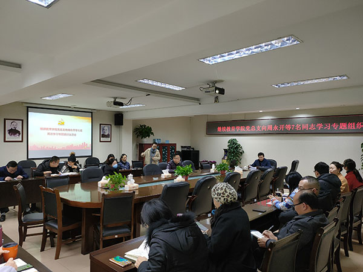

为进一步营造向先进学习、崇尚先进的浓厚氛围，充分发挥先进典型的示范引领作用，不断激励引导党员守初心、担使命，12月25日上午10点，继续教育学院党总支召开“向周永开等7名同志学习”的专题组织生活会。会议由学院党总支书记张智主持。

张智首先宣读了《中共中央关于授予周永开、张桂梅同志和追授于海俊、李夏、卢永根、张小娟、加思来提·麻合苏提同志“全国优秀共产党员”称号的决定》，传达了山东省委组织部《关于广泛开展向周永开等7名同志学习的通知》和学校党委《关于召开向周永开等7名同志学习专题组织生活会的通知》。
张智组织全体党员分别学习了周永开等7名同志的先进事迹，观看了部分优秀党员的宣传视频，并要求全院党员、职工要在专题组织生活会集体学习后，继续进一步深入学习。

张智强调，全体党员同志要按照省委书记彭清华在周永开同志“全国优秀共产党员”称号颁授仪式上的讲话精神，立足岗位实际，进一步深入学习周永开等7名同志的先进事迹，学习他们对党忠诚、信念坚定的政治品格；学习他们牢记宗旨、心系群众的深厚情怀；学习他们苦干实干、担当奉献的优良作风；学习他们严于律己、坦荡无私的高尚情操，吃苦在前、享受在后，清清白白做人、干干净净做事，永葆共产党人的政治本色，努力为学院转型发展，实现党员大会确定的奋斗目标做出积极贡献。
通过此次学习，大家感触颇深，受益匪浅，纷纷表示今后更要牢记自己的党员身份，牢记入党宣誓时的庄严承诺，积极践行全心全意为人民服务的宗旨，以周永开等同志的先进事迹为榜样，从自身做起，扎扎实实做好本职工作，尽最大努力把每一项工作落到实处。
（微信扫描分享）